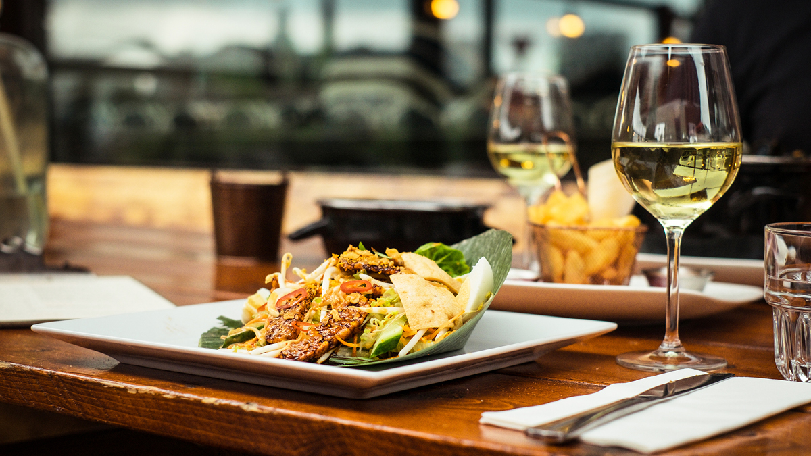
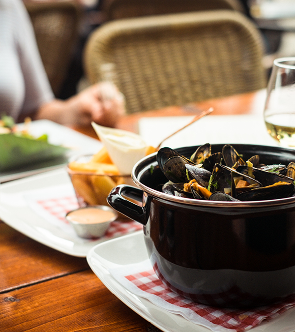
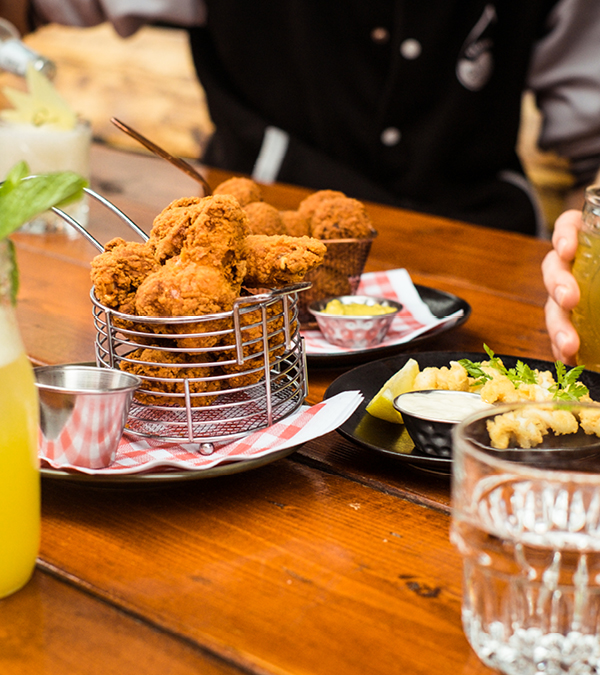

Pubquiz
Test je kennis én je team tijdens onze maandelijkse pubquiz. Een avond vol plezier, gezelligheid en gezonde competitie. Wie weet sleep je de hoofdprijs binnen.

Lunch, borrel en diner tussen het KNSM-eiland en het Java-eiland. Twee zonnige terrassen aan het water, een kaart vol klassiekers met een moderne twist.
Gelegen tussen het historische KNSM-eiland en Java-eiland, op slechts enkele minuten van Amsterdam Centraal Station, vind je Bar & Kitchen De Zuid: een sfeervol restaurant met twee zonnige terrassen bij het water.
Al bijna 20 jaar zijn we de culinaire huiskamer van het Oostelijk Havengebied, geliefd bij buurtbewoners, dagjesmensen én toeristen. Onze toegankelijke en regelmatig wisselende kaart brengt een ode aan klassiekers met een moderne twist.
Van lunch tot diner en van koffie tot borrel: bij De Zuid staat ambacht voorop en wordt alles vers bereid, in een gastvrije, ongedwongen sfeer. Kom langs en ontdek waarom zoveel gasten ons het gezelligste restaurant van het Oostelijk Havengebied noemen.


We organiseren maandelijks populaire events zoals onze pubquiz, Oesters & Bubbels, muziekbingo's en wijn-events. Vraag naar de volgende datum of houd de agenda in de zaak in de gaten.
Test je kennis én je team tijdens onze maandelijkse pubquiz. Een avond vol plezier, gezelligheid en gezonde competitie. Wie weet sleep je de hoofdprijs binnen.
Luxe voor een zachte prijs. Zeeuwse BIO creuses van De Oesterij in Yerseke, gecombineerd met een klassieke Crémant de Bourgogne. De ideale avond voor levensgenieters.
Een hilarische mengelmoes van een klassieke bingo met een muziekthema, in een quiz-achtige setting. Onze hosts maken je avond tot een jolig geheel. Top voor vriendengroepen en teamuitjes.
Of het nu een verjaardag, borrel of bedrijfsfeest is: wij hebben volop mogelijkheden.
Ben jij op zoek naar een leuke baan? Vraag naar onze openstaande vacatures. Zit jouw baan er niet tussen, maar denk je wel iets bij te kunnen dragen aan ons team? Stuur ons dan je cv en motivatie, dan kijken we samen naar de mogelijkheden.
Solliciteer per mail| Maandag | gesloten |
| Dinsdag t/m zondag | 12.00 tot 00.00 |
| Lunch | 12.00 tot 16.00 |
| Diner | 17.00 tot 22.00 |